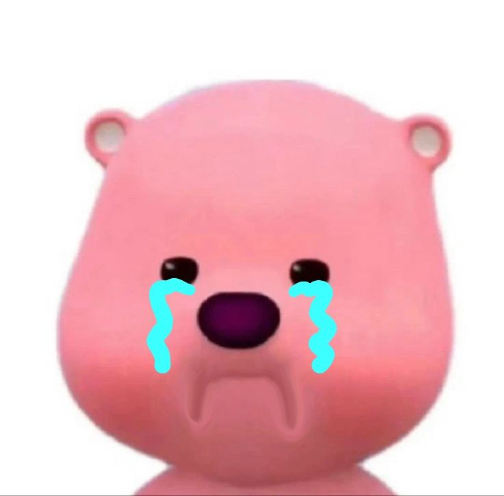

Sayang, Maafin Aku Ya? 🥺
Aku tadi gak bilang bilang dulu mau beli kopi hehe.. akuu egois sama ucill, maafin akuu ya plisssss :(
Maaf Diterima! 🎉
YEAY! MAKASIII BANYAK SAYANG! 😍
lopyuuuu cayang bubub bebeb ayank ucill kanjeng ratu ketot akuu
banyak banyakk hihi.. coba klik link ini ✨